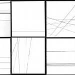

Music Reviews
-
Eels Hombre Lobo
Eels first album of new material since 2005's brilliant Blinking Lights and Other Revelations. How does it measure up?
Brett Oronzio reviews... -
Sunset Rubdown Dragonslayer
While Sunset Letdown is a too-obvious pun, it might sadly be appropriate as Spencer Krug's most promising of his many projects fails to deliver as it has in the past.
Jaclyn Elgeness tries her best to like and reviews... -
Conor Oberst Outer South
A bit of a disappointment but there’s always something to dig in a Conor record.
Cara Nash apologies for the late review but submits it anyway... -
Phoenix Wolfgang Amadeus Phoenix
Not your great great great great great grandfather's Mozart.
Andy Pareti puts on his dancing shoes for... -

Tortoise Beacons of Ancestorship
Tortoise bounce back on their first outing since the relatively disappointing 2004 release, It's All Around You.
Nick Fenn reviews... -

Junior Boys Begone Dull Care
The third album from Junior Boys might not scream out for your attention, but it certainly deserves it.
Japie Stoppelenburg reviews... -
The Field Yesterday and Today
Sweden's Axel Willner has produced another mind-blowing collection of ambient electronic gems.
Nick Fenn reviews... -

Maximo Park Quicken The Heart
Another month, another release in time for festival season, another group tipped to be "the band of the summer." Can Maximo Park Quicken The Heart?
Joe Rivers reviews... -

Dan Deacon Bromst
Dan Deacon pulls an Empire Strikes Back with darker, more mature second album.
Nate Adams grows up with Balitmore's best musical export. -
Eminem Relapse
Yeah, it is average. But Shady's average is way better than everyone elses.
Nate Adams peers into the life of an uninspired serial killer...